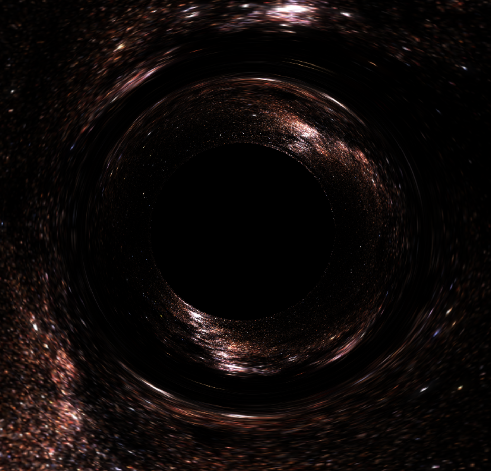

Team: Xiaowen Liu, Alina Sheng, David Long, Leo Yuan
Video: https://youtu.be/vlvq9pDjlzA
This project developed a real-time visualization tool for simulating black holes using the principles of general relativity. Employing the Schwarzschild model, the tool renders scenes with high accuracy. We are able to generate images showcasing phenomena such as the accretion disk, doppler beaming, and photon rings. We also built an interactive interface for the real-time visualizer which shows the gravitational lensing effects of a black hole.
Our project focused on building a visualization tool from the ground up, leveraging WebGL for rendering and JavaScript for the interface. We aimed to simulate realistic gravitational lensing effects around black holes.
We implemented a ray-tracing algorithm that calculates light paths near a Schwarzschild black hole, taking into account the curvature of spacetime dictated by general relativity. To accommodate real-time rendering, we optimized these algorithms for performance, utilizing the GPU's parallel processing capabilities through WebGL.
We faced significant challenges related to numerical stability due to the intense gravitational fields simulated. To address these, we employed higher precision data types and refined our mathematical models for better stability in edge cases. Performance optimization was achieved by implementing more efficient data structures and reducing computational overhead in the shader programs.
Unlike many existing simulations that only focus on still images, our tool provides dynamic, real-time visualization. This required extensive optimization of the WebGL pipeline and careful management of memory and processing resources.
Our final product successfully demonstrates a real-time, interactive visualization of a black hole surrounded by an accretion disk. Users can view the black hole from various angles and distances, observing the effects of gravitational lensing firsthand.
